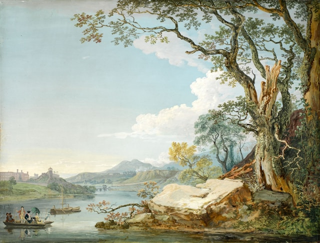
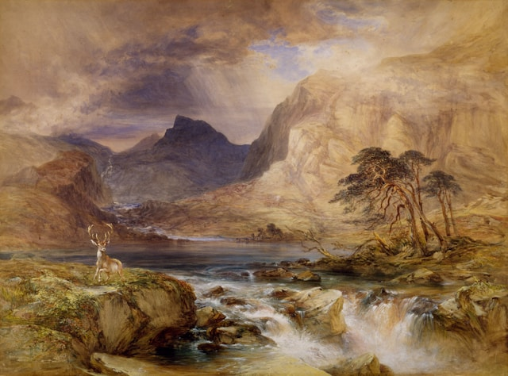
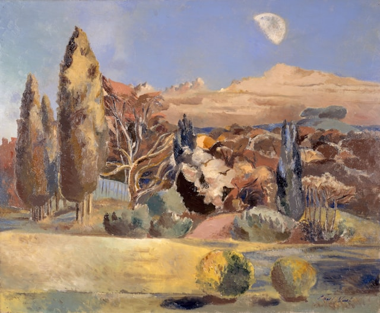

Some random information

Driving Home The Flock, 1812 by Robert Hills

The River Severn at Shrewsbury, Shropshire, 1770 by Paul Sandby

Near Brodick, Isle Of Arran, Scotland, 1849-1851 by William Andrews Nesfield

Landscape of the Moon's First Quarter, 1943 by Paul Nash (d. 1946)
“Don’t think about making art, just get it done. Let everyone else decide if it’s good or bad,
whether they love it or hate it. While they are deciding, make even more art.”
Free Guided Tours Available
Click on the Sign Up button to reserve your slot